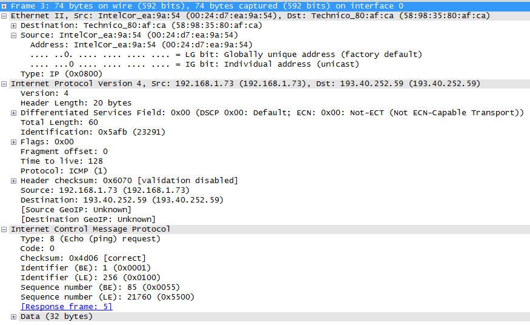
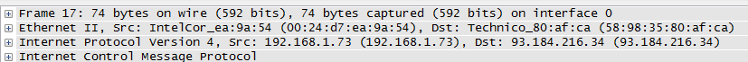

| Töö tegija nimi: Andrei Reinus |
| Töö tegemise kuupäev: Sun Oct 5 15:31:01 2014 |
Enda arvuti IP aadress käsurealt vaadates: 192.168.1.73
Oma võrgu marsruuteri IP aadress (Default Gateway): 192.168.1.254
Nimeserverite IP aadressid (DNS servers): 192.168.1.254
Veebilehel näidatud enda arvuti IP aadress: 90.191.13.152
Mis on võimalike erinevuste põhjuseks? Arvuti asub NATitud võrgus
Mida programm ping teeb ja mida tulemus näitab? Programm saadab välja kindla paketti teise arvutisse, mis vastab sama pakettiga ning programm arvutab liikumise aja.
Milliste protokollide päiseid ARP paketid sisaldavad? eth:ethertype:arp
Millisele aadressile saadetakse ARP päring? FF:FF:FF:FF:FF:FF
Milliselt aadressilt tuleb ARP vastus? 58:98:35:30:af:ca
Milline on ARP pakettide sisu? Millisele MAC aadressile vastab IP
Ekraanipilt Wiresharki keskmisest aknast, kus näha dekodeeritud kujul ARP päringu paketis EthernetII ja ARP osa
ning teine ekraanipilt Wiresharki keskmisest aknast, kus näha ARP vastuse paketis dekodeeritud EthernetII ja ARP osa.
Millised väljad on IP päises? Version, Header length, Differentiated Services Field, Total Length, Identification, Flags, Fragment offset, Time to live, Protocol, Header checksum, Source, Destination
Milline paketi eluaja (Time To Live, TTL) väärtus on päringu pakettidel ning vastuse pakettidel sama võrgu arvutilt ja arvutilt www.example com?
Mida TTL näitab? Näitab mitme masina vahel paketti edastatakse enne kui loobutakse.
Lisada ekraanipilt ühest paketist (ping vastus) Wiresharki keskmises aknas, kus IP osa on tervenisti lahti.
Milliste protokollide päiseid ICMP paketid sisaldavad? eth:ethertype:ip:icmp:data
Millisele aadressile saadetakse ping päring (MAC aadress ja IP aadress)? 58:98:35:80:af:ca, 193.40.252.59
Milliselt aadressilt tuleb vastus (MAC aadress ja IP aadress)? 58:98:35:80:af:ca, 193.40.252.59
Mis on päringu ja vastuse Data osas (kirjeldada oma sõnadega andmete kogust ja sisu)? Korratakse tähestiku, kuni vajalik andmekogus on täis
Ekraanipildid ping päringu ja ping vastuse Wiresharki keskmisest aknast, kus dekodeeritud ICMP paketi IP ja ICMP osa.

Millisele aadressile saadetakse ping päring (MAC aadress ja IP aadress)? 58:98:35:80:af:ca, 93.184.216.34
Milliselt aadressilt tuleb vastus (MAC aadress ja IP aadress)? 58:98:35:80:af:ca, 93.184.216.34
Ekraanipilt ping päringu ja ping vastuse pakettidest Wiresharki keskmises aknas, (kus kõik plussid kinni).

Milliste protokollide päiseid DNS paketid sisaldavad? eth:ethertype:ip:udp:dns
Kui pikk on UDP päis? 8 baiti
Mis sisaldub UDP päises? Lähteport, sihtport, andmete pikkus, kontrollkoodid
Milline on UDP pordi number DNS jaoks? 53
Mis sisaldub DNS osas? Päring www.example.com nimele vastava ip aadress leidmiseks.
Lisada ekraanipilt käsurealt olevatest traceroute tulemustest.
Mis on traceroute tulemuseks üldiselt? Tracert püüab kindlaks teha läbi, mis marsruutereid läbib ühendus www.example.com arvutini.
Mitme marsruuteri kaugusel meie võrgust asub www.example.com? 11
Milliseid protokolle kasutatakse tracert käsu täitmiseks? dns, icmp
Milline paketi eluaja (Time To Live, TTL) väärtus on päringu pakettidel ning vastuse pakettidel?
TTL, mis on väiksem kui vahel asuvatel marsruuterite arv siis vastuspakette ei olnud.
TTL=11 puhul tuli vastuspakett TTLiga 54
Mida TTL näitab? Näitab mitme masina vahel paketti edastatakse enne kui loobutakse.
Wiresharkist salvestatud pakettide faili sisu.
Milliste protokollide päiseid saadud paketid sisaldavad? TCP, IP, HTTP
Kui pikk on TCP päis? 20 baiti
Millised väljad sisalduvad TCP päises? Lähte-port, Sihtkoha-port, järjekorra number, ack number
Kuidas TCP seanssi alustatakse (3 esimest paketti)? SYN, SYN-ACK, ACK
Kuidas TCP seanssi lõpetatakse (4 viimast paketti)? FIN, ACK, FIN, ACK
Milline HTTP päring saadetakse (järgmine pakett, mille Teie arvuti saatis pärast TCP ühenduse loomist)? HTTP/1.1 GET /
Milline tuleb HTTP vastus sellele päringule? HTTP/1.1 200 OK
Milline on TCP pordi number HTTP jaoks? 80
| Liikme nimi | Andrei Reinus | |
| Ping käsurida: | ping -n 10 -l 2000 www.example.com | |
| Keskmine RTT | 150 ms | |
| Wiresharkist leida: | ||
| mitmes fragmendis etteantud pikkusega ping päring saadeti. | 2 fragmendis | |
| päringu andmete (data) osa pikkus (kõikides fragmentides kokku) | 2000 baiti | |
Wiresharkist leida:
Koos fragmentidega edastatakse juhtmes iga paketiga 2076 baiti, millest 2000 on kasulik informatsioon. 2000/2076 = 96,33%
Edastuskiirus: 2076 baiti edastamiseks edasi-tagasi kulus keskmiselt 150ms, mis teeb keskmiseks edastuskiiruseks 13840 baiti sekundis.
TCP ja UDP protokolile ehitatud rakendused võimaldavad suuremal osal tavainimese jaoks nähtava interneti töös hoida.